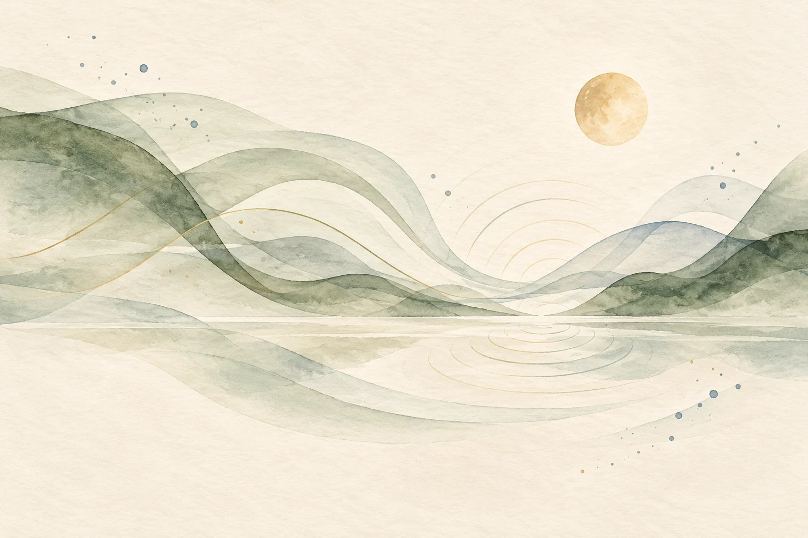
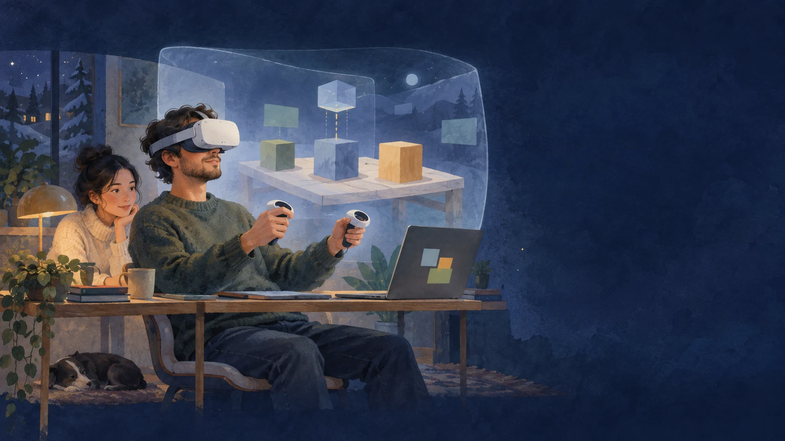
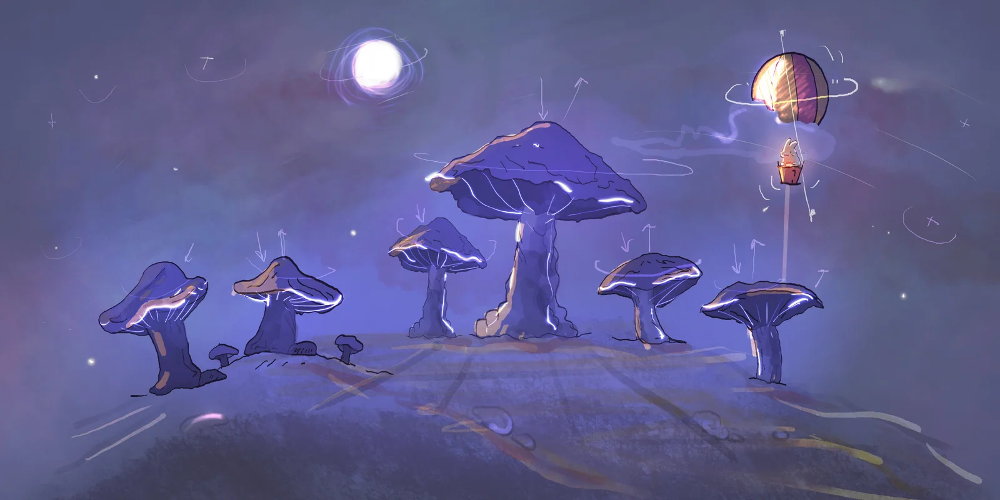

Before we ask people to do more, let’s understand how they’re doing.
Workplace wellbeing starts with people. MOND brings physiological signals, personal context and understandable insights into the same conversation — so support can become more thoughtful.
M / 01

Audio + optical pulse sensing · In development
02 / Explore the MOND concept
Your music. Your rhythm.
A small companion for the moments between everything else. MOND is exploring audio and optical pulse sensing to bring music, personal rhythms and everyday wellbeing closer together.
Listen
An audio concept for favourite music, spoken stories and gentle soundscapes.
Notice
We’re exploring how optical pulse timing can support estimates of heart rate variability (HRV), with signal quality and personal context in mind.
Pause
A little room for a check-in, a favourite sound or a moment with your MOND bunny.
Conceptual artwork expressing the MOND experience, not the product’s appearance. The hardware design remains private during development; audio and sensing performance still require validation.
An imagined moment of listening and calm.
A little space for yourself
Press play. Take a little pause.
A favourite track. A quiet soundscape. A moment with your MOND bunny. We’re designing audio as a companion to these small rituals, creating space to listen and pause.
The sensing side is about noticing patterns over time. Your own check-in adds the context that a pulse signal cannot provide: how you feel, what you’re doing, and what kind of moment you want next.
MOND’s audio concept explores how music, spoken content and gentle soundscapes can accompany everyday life. Choose a sound that suits the moment, whether you want to focus, unwind or simply enjoy listening.
The aim is a simple listening companion for everyday pauses. Sound quality, volume and real-world listening performance still need prototype testing.
02 / PULSE & HRV
Understand the rhythm, gently.
HRV describes the variation in time between heartbeats. MOND is exploring optical pulse sensing (PPG): light helps detect changes in blood volume at the skin, from which pulse timing can be estimated.
Pulse-derived variability is not identical to ECG-measured HRV. Reliable estimates depend on good contact, low motion and signal quality. We’re working toward personal trends, with validation against reference measurements still ahead.
A signal is one part of your story, not a diagnosis or a direct measure of your emotions. MOND is a wellbeing concept in development.
A number alone isn’t the whole story. Our approach makes space for context, uncertainty and the person behind the signal.
A signal, in context
01 / SENSE
Listen before interpreting.
HRV is the starting point. We’re designing around signal quality and a personal baseline, so an isolated reading doesn’t have to tell the whole story.
HRVSignal qualityPersonal baseline
04 / Industry and user research
✧
User research in virtual reality.
Designed with industry in mind from the beginning. MOND is exploring how physiological signals can complement task performance and participant feedback when teams evaluate a VR experience.

A proposed study
Same task. Two designs.
What changes in the experience when the design changes?
Concept illustration of a proposed workflow, not a completed VR experiment.
01
Start with the person
Agree on consent, record a resting baseline and check sensor contact and signal quality.
02
Compare two designs
Try versions A and B of the same VR task. Change one feature at a time and alternate the order.
03
Review the whole experience
Read HRV alongside errors, completion time and participant feedback. Use the findings to choose the next design change to test.
Explore the prototype
A signal, an explanation, a question to investigate.
Explore sample stress and fatigue estimates, their supporting rules and suggestions for a next VR study.
The demo uses existing sample physiology. HRV alone cannot show that VR caused stress or that a design is unsuitable. Review movement, signal quality and participant feedback before drawing conclusions.
A research service for industry
Alongside employee wellbeing, MOND’s proposed business model includes project-based user research and platform licensing. We welcome discussions with VR teams, industrial training groups and research partners.
MOND brings a human-centred research perspective together with hardware exploration. We’re building a bridge between understanding people and creating something they can use.
Huizhong Cao
Founder · Product & human-centred AI
Doctoral researcher at Chalmers, bringing a human-centred perspective to MOND’s product direction.
Dr. Liangyu Chen
Co-founder · Hardware exploration
Based in Shenzhen, with a quantum-computing background and a focus on hardware development.

The imaginative side of MOND
A small adventure. A little room to breathe.
Step into our hand-painted world. Follow a bunny through moonlit landscapes, discover riddles and learn a little music along the way.
MOND is in development. We’re exploring the product concept, technical validation and potential pilot collaborations. Get in touch if you’d like to be part of that conversation.
Who is MOND being designed for?
Our initial focus is workplace wellbeing: helping employees and organisations have more informed conversations about support. The experience and service model are still being developed.
How are you thinking about personal data?
Personal physiological information deserves care. Clear consent, understandable explanations and appropriate access boundaries are design priorities. Pilot data practices will need to be agreed before any collection begins.
How does the game fit in?
The game expresses MOND’s creative world: gentle exploration, curiosity and learning. It is a separate browser experience from the wearable concept, and you can enjoy it right now.
☾
The next chapter is a conversation
Let’s make wellbeing more human.
Interested in a pilot, research collaboration or the future of MOND? We’d love to hear what you’re thinking.